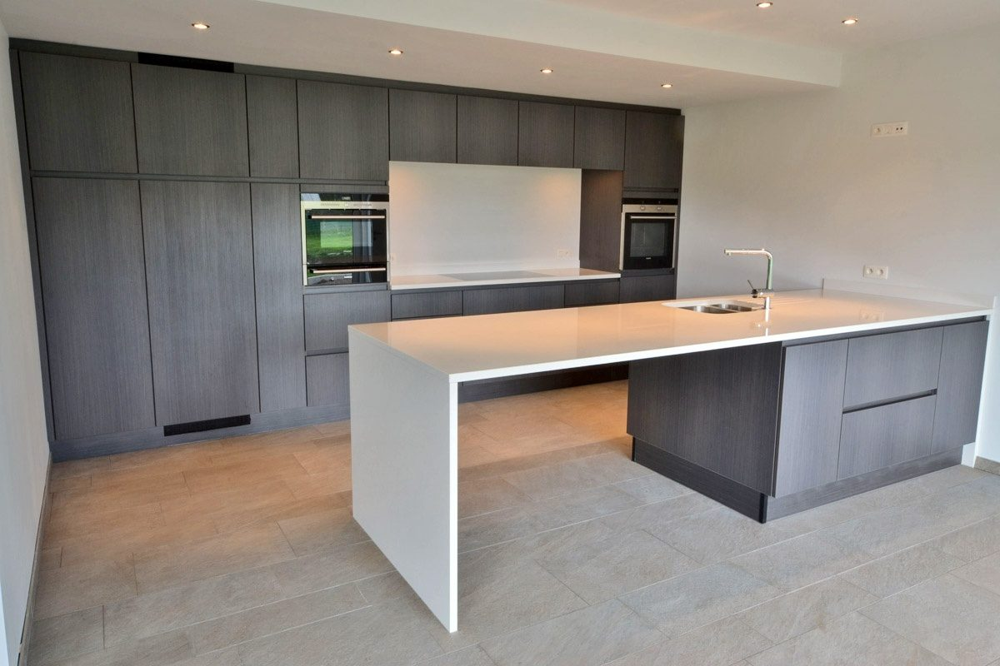
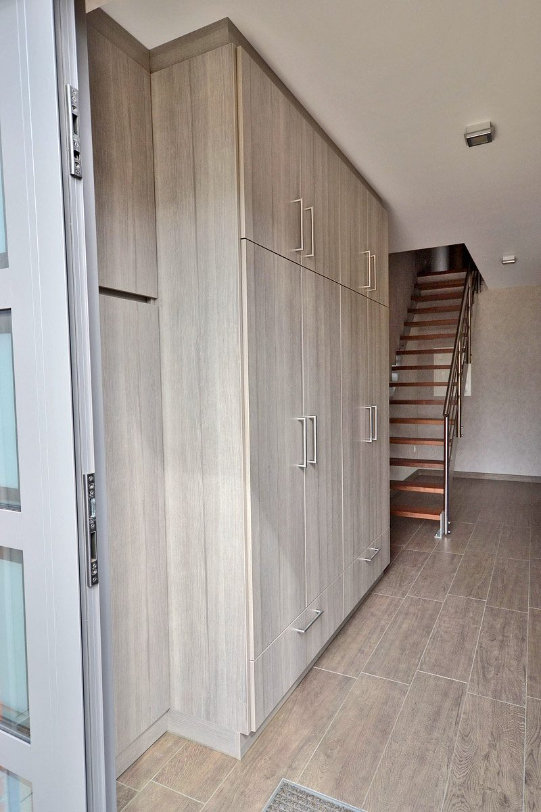
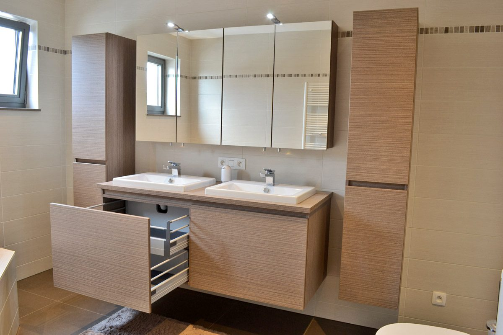

KVW keukens & interieur, Kontich, sinds 1976
Geen geïmporteerde fabrieksmeubelen: elke kast, lade en werkblad wordt bij KVW gemaakt. Met één aanspreekpunt van ontwerp tot plaatsing, en een afspraak die past, ook 's avonds en in het weekend.
Nu kwaliteit… later geen spijt.

1976opgericht door Karel Van Wesemael
2e generatiePeter, in de zaak sinds 1989
100%eigen atelier, geen fabrieksmeubelen
7 op 7afspraak, ook 's avonds en weekend


Keuken, badkamer, bureau, dressing of bergkast
KVW werd in 1976 opgericht door Karel Van Wesemael. Zoon Peter werkt sinds 1989 in het bedrijf en nam eind 2011 de fakkel over. Alle kasten en meubels worden in eigen atelier vervaardigd, en Peter is uw aanspreekpunt van ontwerp en offerte tot productie en plaatsing.
Buitenmaten of standaardmaten: kwaliteit ligt ook in precisiewerk en in de afwerking van details. En mond-aan-mondreclame is een van onze belangrijkste kanalen, daarom kan u rekenen op een correcte en snelle service na verkoop.
In de toonzaal of bij u thuis, op een moment dat u past.
Uitgetekend op uw maten, met een duidelijke prijs.
Kasten en meubels gemaakt in eigen atelier.
Door dezelfde vakman, op de afgesproken leverdatum.
Correcte en snelle service na verkoop.
6 realisaties
Omdat Peter zelf ook produceert en plaatst, werkt KVW vooral op afspraak. Zo is er tijd om uw project rustig te bespreken, en worden leverdata correct nagekomen. Overdag, 's avonds of in het weekend: 7 op 7.
Liever bellen? 0475 57 99 37
Koningin Astridlaan 58C, vlak bij het centrum van Kontich. Wij werken in Kontich, Edegem, Aartselaar, Lint, Hove, Mortsel, Wilrijk, Boechout, Duffel, Rumst en Antwerpen.